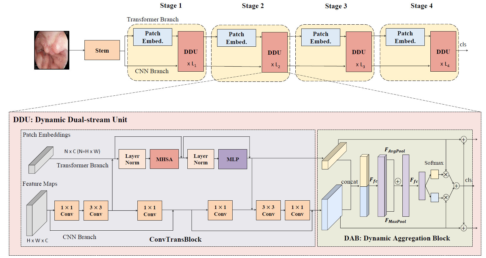

Peng Jiang
江鹏
Research Assistant
School of Computer Science
Wuhan University (武汉大学)
Wuhan, Hubei Province
Email: pelenjiang@whu.edu.cn


Peng Jiang
|
|
I am now a research assistant in BIOD Lab, School of Computer Science, Wuhan University. I received my master degree from Wuhan University (WHU) in 2023.
Before that, I received my bachelor degree from Northwest A&F University (NWAFU) in 2020.
My research interests mainly lie in Deep Learning, Computational Pathology and Medical Image Analysis. I am currently studying on automatic cervical cancer screening
and dedicate to incorporating medical domain knowledge with computational cytology.
† indicates equal contribution.
| Stain Normalization of Pathological Images Using Self-Attention based CycleGAN with Grey Scaled Consistency Loss Zheng Chen †, Peng Jiang †, Wensi Duan, Lang Wang, Jing Feng, Dehua Cao, Baochuan Pang, Juan Liu. Submitted to Computers in Biology and Medicine (CIBM). |
|
| Interpretable Detector for Cervical Cytology Using Self-Attention and Cell Origin Group Guidance Peng Jiang, Juan Liu, Jing Feng, Huan Chen, Yuqi Chen, Dehua Cao, Baochuan Pang. Engineering Applications of Artificial Intelligence (EAAI), 2024. |
|
| Coupling Self-supervised and Supervised Contrastive Learning for Multiple Classification of Cervical Cytological Whole Slide Images Lang Wang †, Peng Jiang †, Wensi Duan, Dehua Cao, Baochuan Pang, Juan Liu. IEEE International Conference on Acoustics, Speech and Signal Processing (ICASSP 2024). |
|
| LGFFNet: Local-Global Features Fusion Network for Radiolucent Jaw Lesions Classification on CBCT Images Hua Chen, Juan Liu, Wen Zhang, Zikang Chai, Peng Jiang, Jing Feng, Liang Mao, Zhijun Sun. Submitted to Artificial Intelligence in Medicine (AIIM). |
|
| MSCCNet: Multi-Scale Convolution-Capsule Network for Cervical Cell Classification Hua Chen, Juan Liu, Peng Jiang, Yu Jin, Jing Feng, Baochuan Pang, Dehua Cao, Cheng Li. IEEE International Conference on Bioinformatics and Biomedicine (BIBM 2023). |
|
| A Systematic Review of Deep Learning-based Cervical Cytology Screening: from Cell Identification to Whole Slide Image Analysis Peng Jiang, Xuekong Li, Hui Shen, Yuqi Chen, Lang Wang, Hua Chen, Jing Feng, Juan Liu. Artificial Intelligence Review (AIR), 2023. |
|
| Deeply Supervised Layer Selective Attention Network: Towards Label-Efficient Learning for Medical Image Classification Peng Jiang, Juan Liu, Lang Wang, Zhihui Yang, Hongyu Dong, Jing Feng. arXiv preprint arXiv:2209.13844 |
|
|  | DDN: Dynamic Aggregation Enhanced Dual-Stream Network for Medical Image Classification Lang Wang, Juan Liu, Peng Jiang, Dehua Cao, Baochuan Pang. IEEE International Conference on Acoustics, Speech and Signal Processing (ICASSP 2023). |
| LGViT: Local-Global Vision Transformer for Breast Cancer Histopathological Image Classification Lang Wang, Juan Liu, Peng Jiang, Dehua Cao, Baochuan Pang. IEEE International Conference on Acoustics, Speech and Signal Processing (ICASSP 2023). |
|
| Medical Knowledge guided Intra-Specimen Reference Network for Cervical Cell Classification Peng Jiang, Juan Liu, Yuqi Chen, Hongyu Dong, Hua Chen, Baochuan Pang, Dehua Cao. IEEE International Symposium on Biomedical Imaging (ISBI 2023). |
|
| Development of Automatic Portable Pathology Scanner and Its Evaluation for Clinical Practice Peng Jiang, Juan Liu, Qiang Luo, Baochuan Pang, Di Xiao, Dehua Cao. Journal of Digital Imaging (JDI), 2023. |
|